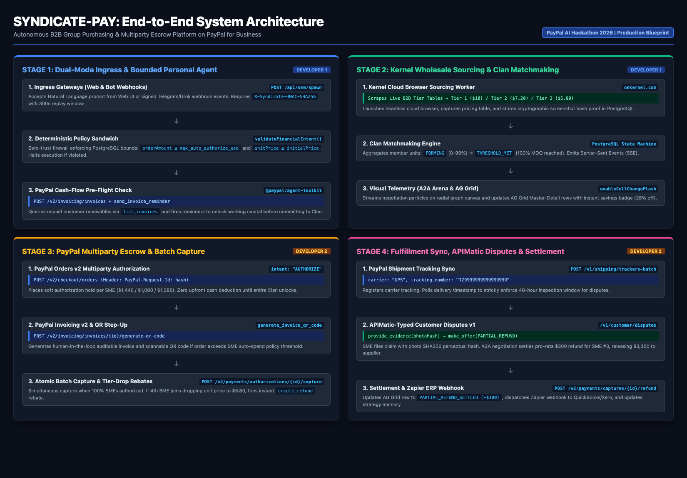
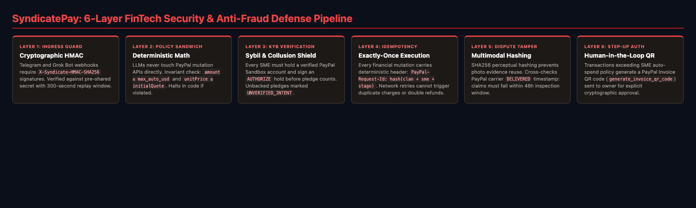
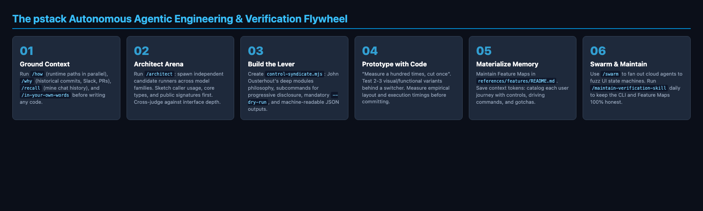
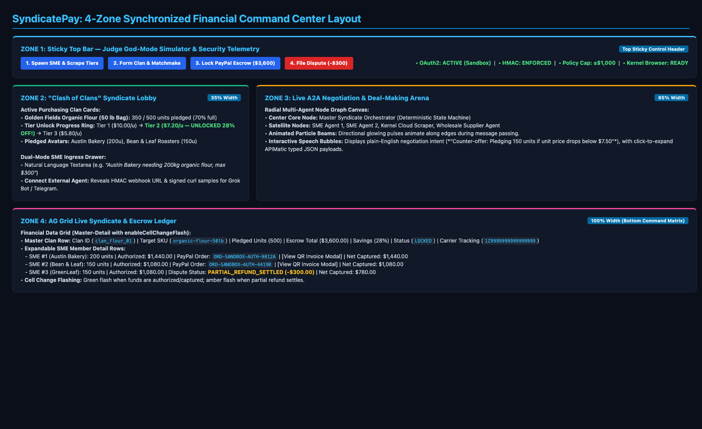
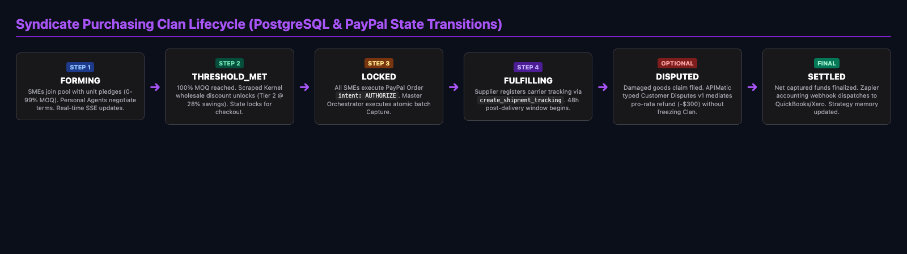

Core Product Thesis: Small and Medium Enterprises (SMEs) face a 30% to 50% retail price penalty on raw materials, packaging, and commercial supplies because they lack the purchasing scale to hit Tier 2 and Tier 3 Minimum Order Quantities (MOQs). Wholeshare introduces a "Clash of Clans"-style multi-agent purchasing syndicate platform built natively on PayPal for Business.
SME owners command their Personal Agents in plain English (via Web UI, Telegram, or Grok Bot). These agents autonomously discover or spin up Purchasing Clans (Syndicates), deploy Kernel cloud browsers to scrape and verify live wholesale tier discounts with screenshot proof, lock pro-rata escrow safely using PayPal Orders (intent: "AUTHORIZE") and PayPal Invoices, and autonomously resolve damaged shipment claims via PayPal Customer Disputes—visualized live inside an AG Grid financial command center and a real-time A2A Negotiation Arena.
| Entity / Prize Track | Official Developer Resources & Links | Architecture & Judging Alignment |
|---|---|---|
| PayPal AI Hackathon ($12k 1st, $5k Agentic Commerce, $5k PayPal+AI, $5k Demo) |
• Competition Portal: paypalaihackathon.devpost.com • PayPal Developer Docs: developer.paypal.com/docs/api • PayPal Agent Toolkit (MCP/TS): github.com/paypal/agent-toolkit • Orders v2 API: /v2/checkout/orders • Invoicing v2 API: /v2/invoicing/invoices • Customer Disputes API: /v1/customer/disputes • Shipment Tracking API: /v1/shipping/trackers |
Moves beyond a trivial 1-click checkout. Chains 6 native PayPal Business primitives (Invoicing, Invoice QR, Order Authorization, Batch Capture, Shipment Tracking, and Disputes) inside a deterministic multi-agent state machine. |
| AG Grid ($5k 1st, $2k 2nd, $1k 3rd — Judge: Sylwia Vargas) |
• AG Grid React: ag-grid.com/react-data-grid • Master-Detail & Cell Flash: Cell Change Renderers |
Powers the Live Clan Order Book & Escrow Matrix with Master-Detail expansion (Clan Master → SME Details), live cell flashing (enableCellChangeFlash), and instant pro-rata dispute recalculation. |
| APIMatic ($1k x 3 Category Winners) |
• APIMatic Platform: apimatic.io • Developer Hub: docs.apimatic.io |
Generates strongly-typed TypeScript SDK wrappers and Zod validation schemas for PayPal's Customer Disputes v1 and Orders v2 OpenAPI specs, ensuring zero LLM hallucination of financial payloads. |
| Kernel ($50 Cloud Browser Credits) |
• Platform: onkernel.com • Documentation: docs.onkernel.com |
Powers the Wholesale Sourcing Agent, spinning up headless cloud browsers to scrape real B2B MOQ tier tables (e.g. 100 @ $10 vs 500 @ $7.20) with screenshot proof cached in PostgreSQL. |
| Render ($50 Credits + $1k Prize — Judge: Shifra Williams) |
• Render Docs: render.com/docs • Blueprints IaC: render.yaml Spec |
Hosts the persistent Next.js application, Node orchestrator daemon, and webhook listener on a non-sleeping paid starter instance with a daily keep-alive cron. |
| pstack & Dr Eggbot (Engineering Harness) |
• pstack Plugin: x.ai/bot/plugin/9717366 • Dr Eggbot: x.ai/bot/93gOz3op1UQdBdbekQFLK • Verification Example: poteto/verification-skill-example |
Implements the Verification CLI (control-syndicate.mjs), Materialized Memory Feature Maps, /architect arena, and /poteto-mode verification loop. |
| Postman & Zapier |
• Postman Workspace: postman.com/paypal • Zapier Webhooks: zapier.com/apps/webhook |
Exports a 1-click verifiable Postman collection and fires Zapier accounting webhooks to QuickBooks/Xero upon Clan settlement. |
The system comprises four tightly integrated stages. To import into Excalidraw, copy the raw Mermaid code block and use More Tools → Mermaid to Excalidraw, or paste into tldraw to generate an editable visual canvas.

control-syndicate.mjs CLI before being linked to the end-to-end state machine. Tests assert on actual database and API states, not mock proxies.
What to Build:
POST /api/sme/spawn): Ingests natural language prompts (e.g. "Austin Bakery needing 200kg organic flour, max budget $300") or signed Telegram/Grok Bot webhook events.max_auto_authorize_usd, min_tier_discount_pct, require_qr_approval_above_usd).@paypal/agent-toolkit's list_invoices to verify SME liquidity and automatically fires send_invoice_reminder for overdue receivables.How to Verify:
node .cursor/skills/verify-syndicate/control-syndicate.mjs spawn-sme \
--name "Austin Artisan Bakery" --sku "organic-flour-50lb" --qty 15 --max-usd 450
# Expected Output: HTTP 200, valid sme_id, policy JSON, and simulated list_invoices log.What to Build:
FORMING → THRESHOLD_MET) and streams real-time negotiation events over SSE.How to Verify:
node .cursor/skills/verify-syndicate/control-syndicate.mjs match-clan \
--sku "organic-flour-50lb" --simulate-agents 3
# Expected Output: Clan status transitions to THRESHOLD_MET (500 units), discount cell updates to 28%.What to Build:
AUTHORIZE): Generates PayPal Invoices and invoice QR codes (create_invoice + generate_invoice_qr_code) and creates individual order authorizations (create_order with intent: "AUTHORIZE") for each member's pro-rata share.pay_order (capture) only when 100% of Clan members reach status AUTHORIZED. Supports late-joiner price drops via instant dynamic rebates (create_refund).How to Verify:
node .cursor/skills/verify-syndicate/control-syndicate.mjs lock-escrow \
--clan-id "clan_flour_01" --dry-run false
# Expected Output: 3 PayPal Sandbox Order IDs in COMPLETED status, valid QR URLs, $3,600 captured.What to Build:
create_shipment_tracking.provide_evidence, negotiates a partial refund via make_offer, and triggers create_refund for the affected SME ($300) while releasing $3,300 to the supplier.How to Verify:
node .cursor/skills/verify-syndicate/control-syndicate.mjs trigger-dispute \
--clan-id "clan_flour_01" --sme-index 2 --damage-pct 25
# Expected Output: PayPal Dispute ID, Refund Transaction ID, AG Grid row updated to -$300 refund.To maximize velocity and avoid merge conflicts, work is divided strictly along Stages 1–2 (Developer 1) and Stages 3–4 (Developer 2), interfacing exclusively through the PostgreSQL database schema.
| Sprint Phase | Developer 1 (Stages 1 & 2) Agent Harness, Kernel Scraper, Clan Lobby & AG Grid |
Developer 2 (Stages 3 & 4) PayPal Escrow, APIMatic Disputes, Tracking & Render |
|---|---|---|
| Days 1–3: Setup & Harness | • Scaffold Next.js App Router + Prisma/Postgres. • Run /create-verification-skill to generate control-syndicate.mjs.• Define Prisma models for Clan and ClanMember. |
• Set up @paypal/agent-toolkit Sandbox credentials.• Generate TypeScript SDKs using APIMatic on PayPal OpenAPI specs. • Build auto-refreshing OAuth2 token middleware. |
| Days 4–8: Core Engines | • Build SME Onboarding endpoint (POST /api/sme/spawn).• Implement Bounded Policy Engine and Telegram webhook. • Build Kernel Cloud Browser scraper worker with fallback cache. |
• Build Escrow Orchestrator (create_invoice, QR codes, create_order w/ AUTHORIZE).• Build atomic batch capture daemon ( pay_order).• Implement dynamic tier-drop refund logic. |
| Days 9–14: UI & Disputes | • Build "Clash of Clans" Syndicate Lobby with MOQ progress bars. • Implement A2A Negotiation Arena (radial graph + SSE stream). • Build AG Grid Master-Detail Ledger with enableCellChangeFlash.• Add Judge God-Mode Simulator Bar. |
• Build Shipment Tracking sync (create/show_shipment_tracking).• Implement APIMatic Dispute flow ( provide_evidence, make_offer, pro-rata refund).• Wire Zapier accounting webhook & export Postman collection. |
| Days 15–20: Hardening & Demo | • Run /poteto-mode and /swarm to fuzz UI state transitions.• Capture proof screenshots via control-syndicate.mjs.• Polish CSS, responsive styling, and animations. |
• Deploy production blueprint on Render (render.yaml).• Configure database keep-alive cron job. • Record and edit the 2:45 hackathon video walkthrough. |

orderAmount ≤ smePolicy.max_auto_authorize_usd and unitPrice ≤ clan.initialWholesalePrice.
Violations halt execution in code before reaching PayPal.
AUTHORIZE hold before their pledged units count toward the Clan threshold. Unbacked pledges remain UNVERIFIED_INTENT.
PAYPAL-TRANSMISSION-SIG and cert headers against PayPal's verification endpoint. External Telegram/Grok webhooks require X-Syndicate-HMAC-SHA256 signatures with a 300-second replay window.
PayPal-Request-Id):
Every call to create_order, pay_order, create_invoice, and create_refund includes a deterministic PayPal-Request-Id: hash(clan_id + sme_id + stage) header, guaranteeing exactly-once execution.
generate_invoice_qr_code and present a scannable PayPal QR code for cryptographic owner authorization.
Following the methodology established by Lauren (@poteto) on Grok Bot and Cursor, software quality and velocity compound exponentially when agents possess the infrastructure to verify their own work autonomously.

In the agentic era, frontier models write syntax faster than humans, but fail in two consistent modes: under-specified intent and lack of context. Operating effectively requires shifting from micromanagement to architecture and constraint design—acting as the "gardener" who tends code smells, maintains organic architecture, and establishes automated feedback loops. When an agent can verify its own work, human babysitting is eliminated, allowing developers to land thousands of high-quality PRs with zero downtime.
/in-your-own-words): When an ambiguous requirement or bug arrives, instruct the agent to restate the problem in its own words before writing code. This forces compression, exposes false assumptions early, and prevents leading the agent down unproductive paths./teach: Calls /how (tracing runtime mechanics across subsystems in parallel) and /why (investigating historical decisions across Git history, PR comments, Slack discussions, and telemetry) to provide deep grounding./recall: Instead of starting from scratch in each new chat session, /recall extracts working context from previous conversation transcripts, preserving hard-won domain knowledge.Before implementing complex features, draft the documentation first. Using the /technical-writing and /unslop skills, documentation is separated into four distinct modes:
Abstract plans create an illusion of progress but lack empirical grounding. Under pstack's Prototyping Playbook, agents plan through throwaway code. When designing novel UI interactions or algorithms, the agent builds 2–3 competing variations behind a feature switcher, drives them programmatically using the verification CLI, and measures layout metrics, rendering times, and error rates to select the superior design based on empirical proof.
/architect Arena WorkflowFor non-trivial architectural changes crossing module boundaries, the agent executes five disciplined phases:
/how and /why over affected subsystems to map ownership and constraints.any escape hatches, or recurring workarounds emerge during implementation, throw away the sketch and start over.control-syndicate.mjs CLI SpecificationFollowing John Ousterhout's deep modules philosophy, the verification CLI provides an expansive capability matrix through a compact command surface:
doctor: Health check verifying PostgreSQL, PayPal OAuth tokens, Kernel keys, and port 3000.seed-demo: Creates deterministic test fixtures (3 SME Personas, 2 Clans, cached Kernel pricing) with --reset support.spawn-sme: Onboards an SME with bounded policy validation and automated AR cash-flow reminders.match-clan: Simulates A2A matchmaking until the Clan hits the 100% MOQ unlock threshold.lock-escrow: Executes PayPal Sandbox Order Authorizations and atomic batch Capture (with mandatory --dry-run support).trigger-dispute: Validates delivery tracking, submits damage evidence hashes, and settles pro-rata refunds.snapshot & screenshot: Captures live accessibility trees (ARIA) and high-resolution viewport images.wait-settle: Waits for active Server-Sent Events (SSE) and asynchronous database transactions to settle.references/features/)Code is the ultimate source of truth. Feature maps catalog every user journey into token-efficient markdown documents structured with four mandatory H2 headers: Sub-features, How to get to it (user POV), Driving it with control-syndicate, and Gotchas. Agents reference these maps to navigate the application without wasting context window tokens.
While local git worktrees consume excessive disk space and memory (capping concurrency at ~10 agents), Cursor cloud agents run on dedicated cloud machines with pre-warmed snapshot builds. This unlocks massive parallelism via /swarm, enabling agents to fan out dozens of workers to fuzz UI state machines, run statistical performance benchmarks, and automatically reproduce user bug reports.
# Example 1: Researching an ambiguous bug
/poteto-mode investigate why PayPal batch capture periodically stalls.
restate the issue in your own words first, trace execution with /how, and give me your top 3 hypotheses.
# Example 2: Designing a new service boundary
/poteto-mode we need to add rate-limiting for external bot webhooks.
/architect this across candidate runners, sketch the type signatures first, and test with throwaway prototypes.
# Example 3: Executing a multi-PR migration
/poteto-mode plan a migration of our dispute engine to APIMatic typed SDKs.
break into small verifiable PRs. each unit must be provable via /control-syndicate before landing.
# Example 4: Automatic bug reproduction
/poteto-mode repro this dispute settlement calculation failure using control-syndicate.mjs.
if reproducible on main, fix the root cause and provide a screenshot proof of the green AG Grid row.To win design and demo delivery awards, Wholeshare organizes the screen into four synchronized visual zones:

enableCellChangeFlash): Green flash on fund lock/capture, amber flash on partial refund

datasource db {
provider = "postgresql"
url = env("DATABASE_URL")
}
generator client {
provider = "prisma-client-js"
}
enum ClanStatus {
FORMING
THRESHOLD_MET
LOCKED
FULFILLING
DISPUTED
SETTLED
}
enum MemberStatus {
PLEDGED
AUTHORIZED
CAPTURED
REFUNDED
}
model Clan {
id String @id @default(cuid())
sku String
skuName String
targetUnits Int
currentUnits Int @default(0)
unitPriceUsd Decimal @db.Decimal(10, 2)
discountTierPct Decimal @db.Decimal(5, 2)
status ClanStatus @default(FORMING)
paypalBatchId String?
trackingNumber String?
createdAt DateTime @default(now())
updatedAt DateTime @updatedAt
members ClanMember[]
events A2AEvent[]
escrowRecords EscrowRecord[]
}
model ClanMember {
id String @id @default(cuid())
clanId String
smeName String
smeEmail String
pledgedUnits Int
authorizedUsd Decimal @db.Decimal(10, 2)
status MemberStatus @default(PLEDGED)
paypalOrderId String?
paypalInvoiceId String?
invoiceQrUrl String?
createdAt DateTime @default(now())
clan Clan @relation(fields: [clanId], references: [id], onDelete: Cascade)
disputes DisputeCase[]
}
model A2AEvent {
id String @id @default(cuid())
clanId String
senderNode String
receiverNode String
messageIntent String
rawPayload Json
timestamp DateTime @default(now())
clan Clan @relation(fields: [clanId], references: [id], onDelete: Cascade)
}
model EscrowRecord {
id String @id @default(cuid())
clanId String
paypalCaptureId String @unique
totalCapturedUsd Decimal @db.Decimal(10, 2)
capturedAt DateTime @default(now())
clan Clan @relation(fields: [clanId], references: [id], onDelete: Cascade)
}
model DisputeCase {
id String @id @default(cuid())
memberId String
paypalDisputeId String @unique
claimedAmountUsd Decimal @db.Decimal(10, 2)
refundAmountUsd Decimal @db.Decimal(10, 2)
status String
evidenceSummary String
createdAt DateTime @default(now())
member ClanMember @relation(fields: [memberId], references: [id], onDelete: Cascade)
}node .cursor/skills/verify-syndicate/control-syndicate.mjs doctor passes all environment and security checks..cursor/skills/verify-syndicate/references/features/README.md.SYNDICATE_SPEC.pdf).postman/wholesharepal.postman_collection.json.render.yaml.